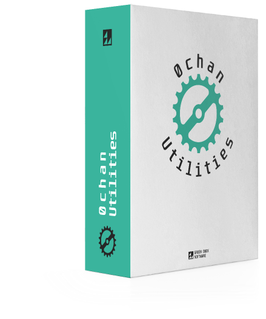
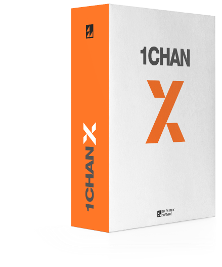
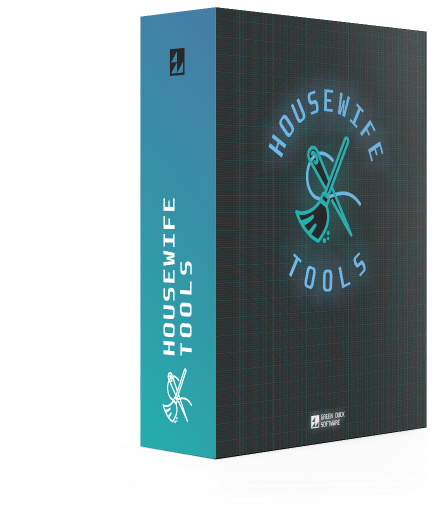
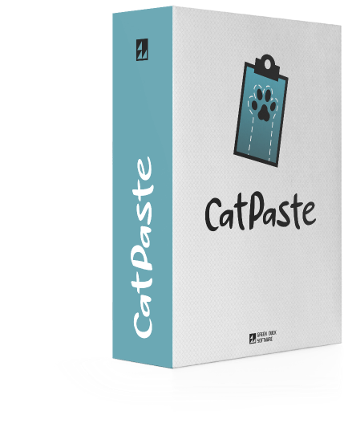

Пользовательские скрипты
Green Duck Software рекомендует Tampermonkey

0chan Utilities
Для сайтов на движке Говнульча
Исправляет многочисленные баги и обогащает пользовательский ыкспириенс


1chan-X
Для сайтов на движке Одинчана
Добавляет мобильную тему, обогащает форму ввода и многое другое

HouseWife Tools
Для Пинача
Превращает пинач в нормальный сайт с псевдографическим интерфейсом
